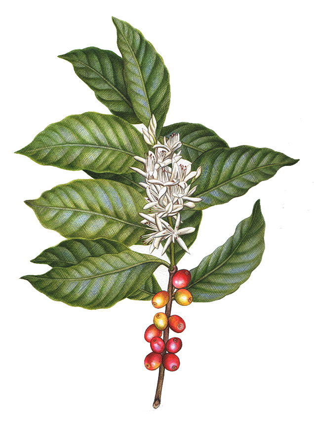

Who is King?

Arabica coffee is a type of coffee made from the beans of the Coffea arabica plant. Arabica originated in the southwestern highlands of Ethiopia and is the most popular kind of coffee worldwide – making up 60% or more of coffee production in the world The Coffea arabica, or arabica coffee plant does not like harsh climates; it likes humidity and can’t handle frost. It prefers temperatures between 15°C and 24°C (59°F and 75°F) and likes to be grown in the shade. Think: subtropical. It’s usually grown at elevations of around 1,900+ feet (600+ meters) above sea level. It likes to be grown on hillsides and matures at about 7 years of age. Arabica coffee has a more extensive tasting range, from being soft and sweet to sharp and tangy but most have a fruit-like smell and aftertaste. It also has a higher acidity, which lends arabica a crisp and wine-like taste. Arabica is widely considered superior to its counterpart Robusta in flavor complexity, sweetness, balance, and acidity.

Robusta
Coffea canephora (syn. Coffea robusta, commonly known as robusta coffee) is a species of coffee that has its origins in central and western sub-Saharan Africa. It is a species of flowering plant in the family Rubiaceae. Though widely known as Coffea robusta, the plant is scientifically identified as Coffea canephora, which has two main varieties, robusta and nganda. Coffea robusta represents 43% of global coffee production, with Coffea arabica constituting most of the remainder. There are several differences between the composition of coffee beans from C. arabica and C. robusta Beans from C. robusta tend to have lower acidity, more bitterness, and a more woody and less fruity flavor compared to C. arabica beans. Since Robusta is easier to care for and has a greater crop yield than C. arabica, it is cheaper to produce.Roasted robusta beans produce a strong, full-bodied coffee with a distinctive earthy flavour, but usually with more bitterness than arabica due to its pyrazine content. Since arabica beans are believed to have smoother taste with more acidity and a richer flavour, they are often considered superior, while the harsher robusta beans are mostly used as a filler in lower-grade coffee blends. However, the powerful flavour can be desirable in a blend to give it perceived "strength" and "finish", noticeably in Italian coffee culture. Good-quality robusta beans are used in traditional Italian espresso blends, at about 10–15%, to provide a full-bodied taste and a better foam head (known as crema). It is also used as a stimulant, diuretic, antioxidant, antipyretic and relieves spasmodic asthma.